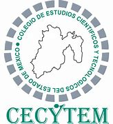

|
Colegio de Estudios Científicos y Tecnológicos del Estado de México Plantel Ixtlahuaca
Elaborado por Jheydi Peralta López NL_27
Fecha:12 de Abril del 2024 Horaa:10:59 am |
El Colegio de Estudios Científicos y Tecnológicos del Estado de México (CECYTEM), es una institución de principios y Valores que comparte la educación significa a las personas y es el motor del crecimiento económico y social.
El CECYTEM brinda servicios educativos del nivel medio superior , con el propósito de que nuestros estudiantes desarrollen sus capacidades científicos y tecnológicos .Desde su creación en 1984, ha seguido un proceso de fortalecimiento y mejora continua, ala fecha contamos con 60 planteles ubicados estratégicamente en nuestra entidad.
Nuestros Planteles de estudio de carácter bivalente, abren la posibilidad de que los egresados cuenten con educación tecnológica terminal que les permita incorporarse a una actividad y promover la vinculación escuela-empresa para fortalecer la empleabilidad de nuestros estudiantes.
La cuarta Modificación ala estructura de organización se llevo acabo en Noviembre de 1988, en la cual se incrementaron de 10 a 12 unidades administrativas una Dirección General ,Área de Direcciones.
Con esta estructura de organización, el Colegio da respuesta a sus programas institucionales, permitiéndole llevar a cabo sus funciones sustantivas para el logro de sus objetivos , así como para elevar incrementar la calidad de la educación media superior terminal , terminal por convencido y bivalente.
A sismo , el CECYTEM considero procedente actualizar los objetivos y funciones de las unidades administrativas que lo integran, a fin de dar cumplimiento y atención ala Norma Mexicana NMX-R-025-SCFI-2015 en Igualdad Laboral y No Discriminación , así como para dar respuesta alas necesidades que la misma dinámica educativa va exigiendo y por ende , estar a la vanguardia para seguir logrando los objetivos, metas, proyectos y programas establecidos en su plan de Trabajo
El modelo académico y educativo del Colegio se orienta ala innovación a los campos de la organización curricular interdisciplina que impulsa la investigación vinculada con la producción y bienestar social. El plan de estudios implementado en este organismo tiene la duración seis semestres para cada una de las carreras que ofrece
Te invitamos a formar parte de nuestra comunidad estudiantil para construir un Estado de México mas fuerte.
|
 |
|
Reservado todos los derechos. No se permite la reproducción de este documento, y su incorporación un sistema informativo y una transmisión en cualquier forma o por cualquier medio (eléctrico, fotocopia, grabación u otra) sin autorización previa del autor Jheydi peralta López
|